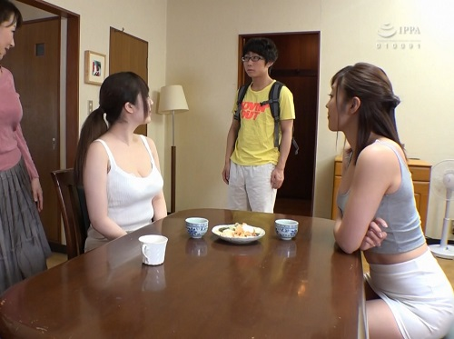

Thịt Luôn Bà Chị Họ Và Cháu Gái ( Thể Loại Some Nhẹ )
Thông Tin Truyện
Tên Truyện: Thịt Luôn Bà Chị Họ Và Cháu Gái ( Thể Loại Some Nhẹ )
Tác Giả : Đang cập nhật
Danh Mục: Truyện Sex Người Lớn, Lãng mạn, Tập Thể, Vụng Trộm
Thể Loại: bà chị họ, chơi cháu gái, truyện sex chị họ
Lượt Xem: 694 Lượt Xem
Nhân dịp về Sàigòn công tác, Tư ghé thăm bà chị họ. Bà chị tên Đào, hơn Tư hai tuổi, rời Cần Thơ lên Sài Gòn làm ăn. Nàng đã có chồng và cô con gái tên Nhung, năm nay 18 tuổi. Tư và Đào đã dan díu với nhau từ lúc nàng chưa lấy chồng. Với 38 tuổi đời và con đã trưởng thành, nhưng nhìn bề ngoài nàng rất trẻ trung, nguời không quen biết chỉ đoán nàng chưa đến 30 tuổi.
Chồng Đào hiện là chủ một tiệm tạp hóa. Chàng không đẹp trai nhưng cũng không xấu, tính tình hiền lành, cởi mở, đối xử tốt với họ hàng nhà vợ. Đào là con ông anh ruột của bố Tư. Tuy là chị em rất gần nhưng hai người có tư tưởng phóng khoáng và ý tưởng dâm dật phát triển sớm. Họ đã cùng nhau ân ái từ lúc Đào 18 tuổi. Tư là người đầu tiên sờ nắn hai quả đào tiên trước ngực Đào. Tư đã dậy Đào cách bú cặc, đã cho Đào hưởng những giây phút sảng khoái của cặc đi sâu vào lồn, vào miệng, vào lỗ hậu môn. Tuy Đào hơn tuổi và là chị nhưng khi chỉ có hai người riêng rẽ, ngôi thứ đưọc thay đổi, Tư gọi Đào là em và xưng anh với nàng. Đào cũng thích lối xưng hô đó trong lúc nhập cuộc mây mưa cùng chàng.

Nhung, con gái Đào 18 tuổi đang học lớp 12. Nhung giống mẹ như đúc, lúc Đào bằng tuổi nàng. Nhung cao 1m65, thân hình thon gọn, ngực nở nang, mông đầy dặn, trông như minh tinh màn bạc. Dáng đi uyển chuyển không khác người mẫu trình diễn thời trang.
Tư đi vào phòng tắm thấy rổ quần áo đàn bà để trong góc phòng. Chàng đoán đó là quần áo của Đào hay Nhung thay ra để giặt. Chàng cúi xuống nhặt chiếc quần lót, đưa lên mũi ngửi. Thấy chiếc quần lót mầu hồng, nhỏ xíu, chàng đoán chắc đó là quần lót của Nhung. Tư đang nhắm mắt,hít hương thơm lưu lại trong chiếc slip của cô cháu gái, thình lình nghe Đào cười nói : ” Anh đúng là một chàng trai đồi trụy, chơi mẹ rồi nay lại muốn chơi con nữa ”
Tư mở mắt thấy nàng đứng trước cửa, vội chữa thẹn : ” Hơn hai năm rồi không gặp em, nhớ em nên hôm nay đến thăm em, anh có làm gì với con em đâu mà em nói vậy ….. ”
” Anh đang cầm cái gì đưa lên mũi vậy ? ”
” Quần lót của em ”
” Anh không biết, hay giả vờ không biết ? Em tin chắc anh biết chiếc quần lót đó là của con em ”
Đào bước vào phòng tắm, Tư hoảng hốt hỏi : ” Chồng em đâu ? ” Đào mỉm cười trả lời : ” Chồng em ở ngoài tiệm, con em đi học rồi, anh yên chí, bây giờ chỉ có hai ta thôi ”
Đào đưa hai tay ôm mặt Tư và đặt lên môi chàng một nụ hôn nồng nàn, say đắm. Tư sung sướng ôm Đào, sờ xoạng khắp thân thể người yêu cho bõ những ngày xa cách nhớ nhung. Đào dẫn Tư vào phòng ngủ trong lúc hai người vẫn ôm nhau và nụ hôn chưa dứt.
Tới phòng ngủ, Đào nằm lăn xuống giường và nói : ” Anh yêu ! Lâu rồi chúng mình không gặp nhau, nhớ anh quá. Hôm nay em phải tranh thủ lúc chồng đi vắng, con đi học, bắt anh phải đền bù lại những ngày anh quên em. ”
” Anh đâu có quên em, bằng chứng là anh đã cố gắng tạo điều kiện để đi công tác nhưng mục đích chính là đến thăm em và nhất là cái này…..” Câu nói chưa dứt, tay chàng đã chộp lấy cặp vú của nàng. Chàng nhẹ nhàng cởi áo và nịt vú để lộ đôi vú mềm mại, trắng như trứng gà bóc với hai đầu vú đỏ hồng, cứng nhắc nhô cao. Chàng cúi xuống hôn lên vú, khẽ nhai đầu vú, trong lúc bàn tay đi xuống thắt lưng, tìm cách cởi quần nàng.
Tư ghé tai Đào thì thầm : ” Anh yêu em ! ” tay tiếp tục cởi nốt chiếc cúc cuối cùng ở quần nàng. Khi quần dài và quần lót cùng một lượt thoát ra khỏi người nàng, môi Tư cũng rời khỏi vú, dần dần đi xuống phiá dưới. Miệng Tư di chuyển lòng vòng, qua bụng, qua rốn. Đến đây miệng dừng lại, cho lưỡi ngoáy vào lỗ rốn làm Đào rùng mình, cong người lên. Lưỡi lướt trên đám cỏ xanh tươi mịn màng đi đến nơi hai đùi gặp nhau.
Lưỡi Tư tích cực hoạt động tại vùng tam giác, lối vào kho báu. Lưỡi quét lên, quét xuống dọc theo giòng suối, lúc lên đụng hột le nhô ra ở đầu ghềnh, lúc xuống chạm hậu môn. Lưỡi búng vào hột le rồi môi ngậm lấy nhay nhay làm nó xưng lên và cứng. Đào cong lưng, nẩy mông lên, dí sát lồn vào mặt Tư.
Đào đưa tay xuống, cởi thắt lưng, kéo khóa quần rồi lấy chân đạp cho quần Tư tuột ra khỏi chân chàng. Đào nằm đè lên người chàng theo thế 69. Lưỡi Đào hớt lấy giọt tinh khí đầu tiên rỉ ra ở đầu buồi. Tư cũng tiếp tục liếm lồn, thọc lưỡi vào lỗ đái. Chàng nhận thấy lồn nàng co bóp, báo hiệu cơn cực khoái thứ nhất đang ào đến với nàng. Ngay lập tức, Tư thọc một ngón tay vào con đường hầm ẩm ướt của người yêu. Ngón tay ấn vào, rút ra, lúc xoay tròn như mũi khoan cho đến lúc nàng lại nhận được cơn cực khoái thứ hai. Đào ghé tai chàng thì thầm : ” Đụ em đi anh ! Em nứng lắm rồi, em muốn cặc anh trong lồn em…”
Tư chuyển mình, xoay người lại, cho cặc đi vào giữa háng nàng. Đào vội vã nắm cặc chàng dẫn đến cửa động đã sẵn sàng mở để đón tiếp khách qúy. Tư thong thả, ấn cặc vào cái lồn ẩm ướt đến nửa chừng lại rút ra. Tiếp tục thọc vào, rút ra nhiều lần rồi bất thình lình, chàng đâm mạnh, đầu cặc chạm tử cung.
Bắt đầu từ chậm rồi nhanh dần, cặc đi vào, đi ra, mang đến cho nàng đầy đủ những cảm giác về kích cỡ của chiều dài cũng như sự to lớn của cây gậy thịt. Mỗi lần đầu cặc sượt qua điểm G trên vách lồn làm nàng rùng mình, cơ bắp âm vật co thắt, dâm thủy nóng bỏng ứa ra bao quanh thân cặc làm cho cả hai người đều cảm thấy vô cùng thích thú.
” Anh yêu em lắm ” chàng ghé tai nàng nói với giọng hồi hộp. Nàng ấp úng trả lời : ” Em cũnnng yêêêuuu…. anh…..Ôi…em s.ư.ớ.n.g q.u.á anh ơi…..”
Hai người ôm nhau lăn lộn trên giường, lúc trai trên, gái dưới, lúc gái trên, trai dưới. Họ thay đổi kiểu cách lúc hai ngưòi ôm nhau ngồi, ngả người phiá trưóc, lùi về phiá sau như hai đứa trẻ ngồi trên lưng ngựa gỗ. Có khi họ nằm nghiêng theo kiểu úp thìa, cặc từ phía sau thọc tới, tay chàng xoa nắn vú nàng. Gần hai giờ đồng hồ quần thảo, cặc chàng luôn thay đổi chỗ, từ lồn lên miệng, rồi lại từ miệng xuống hậu môn.
Lần cuối cùng, Đào qùy gối, tay chống xuống giường, chổng mông để chàng từ phía sau phóng cặc vào lồn. Nằm úp xấp lên lưng nàng, tay chàng vòng xuống xoa bóp hai trái dừa xiêm, ngón trỏ và ngón cái ve viên đầu vú. Cặc đâm vào lồn thật mạnh, thật sâu, liên tiếp thọc vào kéo ra cho đến lúc cả hai người cùng rống lên trong hoan lạc kết thúc trận đấu không có kẻ thắng, người thua.
Tư và Đào âu yếm mặc lại quần áo cho nhau, rời phòng ngủ ra phòng khách, đúng lúc Nhung từ trường trở về nhà. Tư ngồi trên sofa, Nhung từ ngoài chậy vào la lớn : ” Hi Mom ! Hi Uncle ! ” xà xuống, ngồi lên tay vịn ghế sofa, cạnh Tư, mông nàng xát cánh tay chàng. Tư giả vờ như không biết đến sự va chạm đó. Nhung cúi xuống, với tay lấy cái điều khiển TV từ xa. Khi nàng cúi xuống đã cố ý cho vú nàng xượt qua cánh tay Tư. Nàng nhìn chàng với con mắt qủi quái, ranh mãnh như mời chàng thưởng thức cặp vú khêu gợi của nàng.
Tư nhìn thấy đầu vú cứng nhắc đội lên trong chiếc áo thung bó sát ngực. Chàng mỉm cười nhìn Nhung với cặp mắt đưa tình và liếm môi để thầm bảo nàng là chàng cũng đang thèm cặp vú đó. ” Hôm nay có phim nào hay không ? ” Tư hỏi và cúi xuống để má cọ vào đầu vú cương cứng của Nhung. Chàng nhận thấy nàng rùng mình, hơi thở mạnh và nhanh, giống như chàng. Tư ngẩng đầu lên bắt gặp cặp mắt của Đào đang theo dõi chàng. Đào mỉm cười, không nói gì, làm ra vẻ không biết gì đến việc gì xẩy ra giữa hai người.
” Có một phim hay bắt đầu vào lúc 9 giờ tối. ” Nhung trả lời.
” Ồ ! Thế thì hay quá, Cậu sẽ ngủ trên chiếc sofa này để coi phim nếu mẹ cháu cho phép. ” Tư đang mơ tưởng đến cái miệng xinh xắn của Nhung bú cặc chàng thì bị tiếng chuông điện thoại cắt ngang giòng suy tưởng. Đào nhấc ống điện thoại nghe. Với vẻ mặt vui tươi báo cho Tư biết, chồng nàng có việc khẩn cấp phải rời Saigòn, nàng phải sửa soạn hành lý cho chàng lên đuờng trong đêm nay. Tư mừng rỡ vì sẽ không gặp trở ngại cùng Đào đi vào cõi thiên thai trong đêm nay và rất có thể Nhung cùng tham dự.
Tư đã nhiều lần đụ Đào, nay gặp Nhung với cơ thể nẩy nở, xinh đẹp hơn mẹ lúc còn trẻ, chàng không thể bỏ qua cơ hội này để thưởng thức mùi thơm trinh nữ.
Trong khi Đào sửa soạn hành trang cho chồng, Tư nhìn Nhung, nháy mắt : ” Cậu muốn ra hồ tắm cháu có ra bơi với cậu không ? ” Nhung trả lời : ” Có, nhưng cậu ra trước, cháu sẽ ra sau khi hoàn tất bài tập ở nhà. ”
” Tốt ! Cháu cứ đi làm bài tập. Cậu chờ cháu ở ngoài hồ với mấy lon bia ” Tư đưa tay vuốt má Nhung, nàng rùng mình, nhắm mắt. Tư đi xuống bếp lấy vài lon bia. Lúc qua phòng ngủ thấy Đào cúi xuống xếp quần áo cho chồng vào va li. Chàng đi đến sau Đào, để tay vào giữa hai chân nàng. Đào quay lại, ôm cổ và hôn chàng. ” Trông thấy anh và con em liếc mắt đưa tình với nhau, lồn em cũng thức giấc, nước rỉ ra rồi. Em không muốn chờ đợi lâu nữa. Em muốn anh đụ Nhung rồi em sẽ cùng tham dự với nó.” Đào vừa thở vừa nói ” Em muốn liếm sạch dâm khí của con em còn dính trên cặc anh. Em muốn mút hết tinh khí của anh đã xả ra trong chiếc lồn bé nhỏ của con em. Em muốn hai mẹ con em sẽ phục vụ anh cùng một lúc. Anh có thích như vậy không ? ”
” Em không đùa đấy chứ ! ! ! ! ”
” Em nói thật đấy….tối nay anh sẽ biết ….”
Tư hôn phớt lên môi Đào một cái và cho nàng biết mình đi ra hồ tắm. Đào quay lại tiếp tục sửa soạn hành trang cho chồng. Trên đuờng đi ra hồ bơi, Tư sung sướng với giấc mộng được đụ cả hai mẹ con Đào trong đêm nay.
Đặt mấy lon bia trên bờ hồ, Tư nhào xuống hồ, bơi vài vòng. Ngâm mình dưới làn nước mát, Tư uống một lon bia, ngửa mặt ngắm những ngôi sao sáng lấp lánh trong bầu trời xanh biếc. Tư vô cùng ngạc nhiên, thấy Nhung ngồi trên bờ hồ từ lúc nào chàng không biết. Thân hình thon gọn với đường cong tuyệt mỹ của Nhung nổi bật dưới ánh trăng giống như Hằng Nga giáng thế.
Nhung đứng dậy bước đến gần Tư. Từ dưới hồ nhìn lên, cặp mắt Tư xoi mói khắp nơi, mọi xó xỉnh trên cơ thể cô cháu gái. ” Trời….cháu tôi đẹp quá….cháu có nghĩ rằng bộ đồ tắm của cháu sẽ biến mất khi nó ướt không ? ” Nhung mỉm cười, không trả lời, nhào xuống nước. Tư liếc nhìn cặp mông nẩy nở của cô cháu gái bập bềnh trên làn sóng một cách thèm thuồng.
Nhung quay lại thấy ông cậu đang say mê, ngắm nhìn mình. Nàng biết chắc ông cậu đang mơ tưỏng đến cái lồn của nàng, nhưng còn do dự chưa dám tấn công. Nhung không ngần ngại, tạo cơ hội cho ông cậu. Nàng bơi lại gần Tư rồi giả vờ như chân bị chuột rút, nàng la cầu cứu, với tay về phía chàng. Tư vội vàng nắm lấy tay Nhung kéo về phiá mình. Lợi dụng cơ hội, Tư quặp nàng vào nách để dìu nàng vào bờ nhưng bàn tay đã có dịp ép lên bầu vú no tròn.
Tư đăt nàng nằm trên bờ hồ và hỏi : ” Chân cháu bị chuột rút đã hết đau chưa ? ” Nhung nhăn mặt làm ra vẻ khó chịu trả lời : ” Chân cháu còn đau, không cử động được ” Tư vội trèo lên bờ, xoa bóp chân cho cô cháu. Nhung nằm yên, nhắm mắt thưởng thức bàn tay của giống đực đầu tiên xoa bóp chân nàng. Sự thích thú hiện trên khuôn mặt cùng với nhịp thở hồi hộp đưa cặp vú nhô lên, hạ xuống. Nhìn ngực cô cháu, Tư biết ngay nàng đang muốn gì.
Hiểu ý cháu, ông cậu đưa bàn tay từ bàn chân, cổ chân từ từ đi lên đùi. Không gặp phản ứng, bàn tay tiếp tục đi tới nơi hai đùi gặp nhau, xoa lên mu lồn. Nhung không thể im lặng đuợc nữa, nàng đưa hai tay vít cổ chàng xuống cho hai cặp môi gặp nhau. Tư bắt đầu dùng lưỡi liếm môi, thọc lưỡi qua khe răng vào miệng nàng. Hai lưỡi quấn quýt bên nhau. Lưỡi chàng hướng dẫn lưỡi nàng qua miệng chàng. Tư mút lưỡi nàng, răng cắn nhẹ đầu lưỡi nàng và nuốt luôn nước
miếng của cô cháu.
Hai cậu cháu ôm nhau lăn xuống hồ trong khi hai cặp môi vẫn không rời nhau, nụ hôn nóng bỏng làm cho nước trong hồ tăng nhiệt độ. Tư cởi nịt vú của nàng quăng lên bờ. Môi chàng di chuyển xuống cổ, lướt qua vai đến vú của nàng. Nhung rên rỉ, hơi thở dồn dập khi lưỡi Tư quét lên đầu vú.
Đầu vú của Nhung đã bắt đầu cứng nhắc, lồi ra nổi bật lên giữa quầng vú hồng hồng. Tay Nhung ôm đầu Tư, dùng ngón tay chải tóc chàng và kéo đầu chàng vào ngực không cho miệng chàng rời khỏi vú.
Chồng Đào đã về nhà. Tư hôn Nhung và nói : ” Ba cháu đã về, chúng ta hãy tạm ngưng, cậu bơi vài vòng cho cặc xẹp xuống để về tiễn ba cháu đi công việc. ” Cuối cùng Tư cũng chế ngự được cơn khát tình. Nhung rất buồn về sự gián đoạn bất ngờ, nàng ở lại hồ, để một mình Tư lên bờ, mặc quần áo đi vào trong nhà.
Vừa thấy Tư qua cửa bếp vào nhà, chồng Đào vội lên tiếng : ” Cậu Tư ! Tôi có công việc cần phải đi gấp. Rất tiếc không thể ở nhà tiếp cậu đưọc. Xin cậu ở lại chơi chừng ba ngày tôi sẽ về . Tôi sẽ đưa cậu đi thăm viếng mấy tụ điểm giải trí của Sài thành. ”
” Không sao ! Anh có công việc cần, cứ đi. Em về công tác, tiện ghé thăm anh chị. Công việc của em ở đây cũng phải một tuần lễ mới xong. Em sẽ chờ anh về. Chúc anh thượng lộ bình an, gặt hái nhiều thắng lợi trên thương trường. ” Sau khi bắt tay tạm biệt với chồng Đào, Tư vội vã trở lại hồ bơi.
Nhung ngồi trên bờ hồ chờ Tư. Chàng mở một lon bia đưa mời Nhung. Nàng không từ chối, uống một ngụm bia để lấy tinh thần. Tư ngồi xuống cạnh Nhung, tay vòng qua lưng, những ngón tay bắt đầu xoa vú. Chàng cúi xuống hôn lên gáy, lên cổ, lên má, gậm nhấm vành tai, sau cùng là môi cô cháu gái. Đáp lại Nhung hé môi cho lưỡi Tư chui vào trong miệng, nàng dùng răng khẽ nhai lưỡi chàng, hai đầu lưỡi cọ vào nhau.
Thình lình, Tư ngẩng đầu lên. Nhung ngạc nhiên, mở mắt lớn nhìn chàng. Thấy Tư cười, Nhung hiểu là Tư có ý trêu chọc, nàng bật cười, ôm đầu Tư hôn lên môi chàng. Nhung đứng dậy, quay lại, ngồi vào lòng Tư, hai mặt đối nhau. Nhung ngồi để lồn đè lên con cặc cương cứng của Tư. Nhung lại hôn Tư, những tay búp măng của nàng chải, cào, gãi trên mái tóc của ông cậu, giữ vững đầu chàng không cho môi chàng thoát khỏi vòng kìm kẹp của môi nàng như lúc trước.
” Cháu không thể tin được chuyện đã xẩy ra một cách êm xuôi ” Nhung thì thầm ” Cháu đã mơ tưởng đến việc này từ năm ngoái, khi cháu cùng ba cháu gặp cậu trong ngày họp mặt ở nhà ông bà ngoại. Cháu yêu cái hôn nồng nàn của cậu, cháu thích bàn tay cậu chu du trên thân thể cháu. Những điều cháu mơ ước nay đã thành sự thật. Cháu yêu cậu…..”
Tư vuốt má Nhung ” Cậu cháu mình giống nhau. Cũng từ ngày gặp cháu trong cuộc họp mặt gia đình, cậu đã yêu cháu. Cậu đã từng nghĩ đến cháu, muốn ôm cháu vào lòng, muốn được làm tình với cháu. Hôm nay ước mơ của cậu đã được cháu đáp lại. Cậu cảm ơn cháu. Cháu đẹp lắm. Cậu yêu cháu mãi mãi. ”
” Cháu còn trinh. Cháu đã giữ tiết trinh này dành cho cậu. Hôm nay cháu hiến dâng tiết trinh này cho cậu. ”
Tư nâng cằm Nhung, bốn mắt nhìn nhau. ” Cháu muốn cậu là người đầu tiên của cháu hả ? ” Tư hỏi và Nhung gật đầu trả lời ” Vâng ”
” Cháu dành cho cậu cái vinh dự phá trinh cháu hả ” Một lần nữa Nhung gật đầu ” Vâng ! Thật vậy.” Nhung lớn tiếng thốt ra : ” Cậu là người yêu đầu tiên của cháu. Cậu hãy nhận lấy tiết trinh của cháu, cậu có muốn không ? ”
” Có chứ ! Cậu nhiều tuổi hơn cháu và cậu cũng không phải là thằng khờ. Bây giờ chúng ta đang ở trong hồ tắm, chúng ta chỉ nên hôn nhau, vuốt ve, mơn trớn nhau, còn việc làm tình thật sự chúng ta nên làm trên giường “. Nhung đồng ý. Hai cậu cháu lại bắt đầu hôn nhau, những bàn tay thám hiểm thân thể của nhau. Ngón tay của ông cậu móc vào cái lồn bé nhỏ của cô cháu. Bàn tay cô cháu nắm con cặc cương cứng của ông cậu vuốt ra, ấn vào cho cậu đụ bàn tay cháu.
Đào đứng trên bờ hồ nhìn hai cậu cháu nô đùa dưới nưóc lên tiếng hỏi ” Hai cậu cháu vui quá nhỉ, sắp xong chưa ? ”
Tư cười đáp lại ” Còn sớm mà chị, chúng em bơi vài vòng nữa sẽ lên ”
” Ừ ! Hai cậu cháu cứ vui vẻ tắm mát, nhưng nhớ là 9 giờ TV có chương trình hay đấy. Tôi vào nhà đọc sách rồi ngủ luôn. Ngày mai gặp lại. ”
Sau khi Đào vào nhà, Tư ôm chầm lấy Nhung, miệng hai cậu cháu lại gắn chặt vào nhau, hai chiếc lưỡi lại quấn vào nhau. Cặp vú căng tròn và đầu vú rắn chắc của Nhung ép sát vào ngực Tư. Bàn tay cậu đưa vào giữa háng cháu, dìu nàng vào chỗ nông, nước chỉ chấm thắt lưng. Chiếc slip cuối cùng còn sót lại trên người Nhung cũng đưọc ông cậu cởi ra, quẳng lên bờ.
Tư cúi xuống ngậm vú nàng, lưỡi lia qua lia lại trên đầu vú, răng khẽ nhai núm vú. Vú bên phải bị miệng cậu bú, mút. Vú bên trái cũng không thoát khỏi bàn tay ông cậu nắn, bóp, hai ngón tay mân mê đầu vú. Tư khéo léo, miệng vẫn bú, tay vẫn xoa nắn vú, nhưng chân cũng từ từ đưa đuợc cô cháu vào bờ.
Tư bế Nhung đặt nằm trên bờ hồ, chân thõng xuống nước. Chàng đứng dưới hồ, giữa hai chân nàng. Dưới ánh trăng, chàng đã được chiêm ngưỡng cái lồn xinh xinh của cô cháu gái. Mép lồn đỏ hồng vun cao, lún phún những sợi lông đen nhánh, mịn màng bao phủ. Tư cúi xuống hôn lên cặp mông nẩy nở, cặp đùi đầy khêu gợi. Lưỡi Tư bắt đầu quét dọc theo bờ suối, từ hậu môn lên mồng dốc.
Tay tư banh mép lồn, lưỡi thọc sâu vào cửa động đào, miệng mím chặt âm môi, mút âm khí làm cho Nhung không kìm hãm được tiếng rên rỉ trong hoan lạc. Tiếng rên quá lớn của nàng làm con chó hàng xóm thấy động sủa theo.
Lưỡi Tư đảo qua, đảo lại trong âm đạo như mũi khoan xoáy vào trong hang cấm. Lần đầu tiên, lồn Nhung bị vật lạ xâm nhập, nàng sung sưóng kêu lên, hai tay chộp lấy đầu Tư ghì sát vào lồn, cố gắng cho lưỡi chàng vào sâu hơn nữa. Tư cảm thấy lồn nàng xiết chặt lưỡi chàng. Mũi Tư cọ vào hột le, mùi thơm trinh nữ lọt vào khứu giác, hương vị ngọt ngào của dâm thủy trên đầu lưỡi đem lại cho chàng một niềm vui vô cùng sảng khoái.
Những khoái cảm, những hưong vị ngọt ngào chàng đưọc hưỏng hôm nay cũng giống như lần đầu tiên chàng làm tình với mẹ nàng 20 năm về trước. Nhung bắt đầu cong lưng, hất lồn lên, dí sát vào mặt Tư, trong khi Tư ấn một ngón tay vào lỗ lồn bé nhỏ, chật hẹp của nàng. Ngón tay thọc vào, rút ra liên tục cho đến lúc lồn đầy nước, ngón tay rút lui để lưỡi thay thế. Ngón tay dính đầy dâm thủy rời khỏi lồn, chui vào hậu môn, cũng thụt vào, rút ra thăm dò lỗ đít vẫn còn trinh cho đến lúc này.
Tư cảm thấy mũi chàng sắp bể do lồn nàng mài miết trên mặt chàng mỗi lúc mỗi mạnh thêm trong lúc ngón tay chàng bơm lỗ hậu môn. Nước lồn nhoe nhoét trên mặt, trên mũi ông cậu đa tình. Tư vui vẻ nhận lãnh dòng dâm thủy từ lồn nàng phun ra ào ạt tuôn vào miệng chàng. Tư bú, mút, liếm hết những tia rượu tiên, những giọt mật ngọt từ trong thạch động chẩy ra.
Sau cơn chấn động vô cùng khoái lạc của cơ thể trinh nữ, do phản xạ tự nhiên Nhung mỉm cười, ngồi dậy, hai tay nâng mặt Tư hôn và liếm dâm thủy của nàng còn dính trên mặt Tư ở những nơi mà lưỡi chàng không tới được.
Nhung sung sướng phát biểu : ” Oh ! Thật tuyệt vời, Nhung chưa bao giờ đưọc người đàn ông nào làm cho Nhung đạt nhiều khoái cảm như hôm nay. Cám ơn anh à … cám ơn c.ậ.u….. ”
” Cậu nghĩ cháu là cô gái còn trinh, chưa ai đụng chạm đến lồn cháu phải không ? ”
” Không hẳn vậy. Cháu đã nói chưa có người đàn ông nào chứ không phải chưa có ngưòi nào làm cho cháu mê mệt như hôm nay. Theo đúng nghĩa thì cháu vẫn còn trinh, màng trinh vẫn chưa bị chọc thủng. Chưa có người đàn ông đụng chạm đến thân thể cháu. Chỉ có hai lần cháu và người bạn gái của cháu đã dùng tay và lưỡi làm thỏa mãn cơn dâm của nhau. Hôm nay, cậu là người đàn ông đầu tiên ôm ấp cháu, cặc cậu đã cứng như sắt, cậu còn đợi gì nữa mà không lên đây để nhận món quà đặc biệt cháu dành riêng cho cậu ?….”
” Cậu muốn lắm chứ ! Cậu muốn con cặc cương cứng của cậu đút sâu vào trong cái lồn xinh đẹp, nhỏ hẹp của cháu, nhưng không phải ngay bây giờ và tại nơi đây. Cậu muốn việc đó sẽ xẩy ra trên giường ngủ của cháu, trong phòng riêng của cháu. Chúng ta còn cả một đêm dài và rất có thể cả một tuần lễ bên nhau để làm mọi chuyện khác nữa. ”
Tư leo lên bờ, ôm quần áo của hai cậu cháu, ra hiệu cho Nhung cùng đi vào nhà. May mắn là Đào đã tắt ngọn đèn ngoài sân sau để hai người trần truồng đi vào nhà không bị phát hiện.
Hai cậu cháu đi vào buồng tắm. Những tia nước ấm từ vòi hoa sen tưới lên thân thể hai người. Họ dùng tay thay cho khăn kỳ cọ cho nhau. Nhung ép mông vào người Tư, cặc chàng lọt vào giữa hai chân nàng. Đầu cặc chạm âm môi, trượt lên hột le, nàng dùng tay hướng dẫn cặc xuống cửa hang, nhưng chàng giật ra. Nhung thất vọng rên rỉ, Tư an ủi nàng bằng nụ hôn say đắm.
Hai người bước ra khỏi bồn tắm, lau khô người cho nhau. Nhung dẫn cậu đi vào phòng ngủ của nàng. Nơi đây Đào đã thay khăn trải giường mới, đôi gối mới giống như giường của đôi tân hôn trong đêm động phòng hoa chúc.
Nhung nằm xuống giường, Tư liếc mắt qua khe cửa thấy Đào từ ngoài hành lang ngó vào trong phòng, vội nhắc Nhung : ” Cháu hãy tắt đèn đi, đề phòng mẹ cháu đi xuống bếp tìm nước uống, thấy chúng mình trần truồng như thế này không tiện. Chúng mình đã có ánh sáng của chiếc TV cũng đủ rồi. ”
Nhung nghe lời tắt đèn và kéo Tư nằm xuống giường cạnh nàng. Tư biết Đào vẫn còn ở ngoài hành lang, chàng muốn nàng có một cái nhìn rõ ràng về việc chàng sắp sửa đưa con nàng vào Cõi Thiên Thai như thế nào. Tư ngồi dậy, tay cầm cặc rê lên, kéo xuống dọc theo âm môi của Nhung. Đầu cặc chọc ghẹo mồng đốc làm cho lồn Nhung chẩy nước.
Lồn Nhung thèm khát được ăn cặc từ lâu, vậy mà Tư cứ rề rà, châm chọc chưa chịu đút cặc vào. Không thể để Tư dử mồi mãi, Nhung nắm lấy cặc đưa đến cửa hang đã sẵn sàng đón khách. Hơi nóng từ lồn tỏa ra hết sức cuồng nhiệt, chàng đành phải ấn cặc vào trong. Lồn nàng tuy đã đầy nước nhưng vì quá nhỏ, Tư phải mất hai phút đồng hồ mới đưa được đầu cặc lọt qua cửa hang. Chàng phải rút ra, chọc vào nhiều lần, tẩm dâm thủy cho trơn quy đầu. Rồi bất thình lình chàng đâm một cái thật mạnh và nhanh, chọc thủng màng trinh, đầu cặc chạm tử cung.
Nhung nhăn mặt, nước mắt trào ra, kêu thét : ” Á…đau quá….chết cháu rồi….cậu ơi…” Tư vội gắn lên môi nàng một nụ hôn, nằm im, không nhúc nhích trên bụng nàng một lúc rồi nói : ” Hết đau rồi phải không cháu ? Ai cũng phải qua một lần như vậy và bắt đầu từ giờ phút này cháu sẽ cảm thấy vô cùng thích thú. ”
Sau vài phút nghỉ ngơi, lồn Nhung đã quen dần với sự xâm nhập đột ngột của cặc, Tư bắt đầu kéo cặc ra gần hết, rồi lại ấn vào một cách nhẹ nhàng và chậm chạp. Cặc thọc vào rút ra, bắt đầu chậm sau nhanh dần. Nhung không còn thấy đau và cảm thấy đê mê khi đầu cặc sượt qua điểm G trong âm đạo. Nàng vòng tay ôm lưng Tư kéo xuống cho hai cặp vú dính vào nhau, quặp hai chân lên mông chàng ghì xuống cho cặc chàng đi sâu vào lồn, bìu dái đập vào đít nàng.
Tư tiếp tục thọc cặc vào, rút cặc ra liên tục làm cho nhịp thở của Nhung trở nên dồn dập, nàng mê man rú lên từng hồi những lời nói tục tĩu trong đợt khoái cảm tôt đô. Tư đâm đầu cặc vào sâu hết cỡ, rút ra gần hết với tốc độ hêt sức nhanh như pit tông trong xi lanh xe cao tốc.
Nhung rên rỉ : ” Ô….A….Sướng s.ư.ớ.n.g ….quá cậu ơi…..” Tư bịt miệng nàng bằng đôi môi của chàng và cặc lên xuống thật mạnh, thật nhanh. Nhung ôm chặt lưng Tư, móng tay bấm sâu vào da thịt chàng trong lúc cặc vọt tinh khí vào đây lồn. Hai cậu cháu ôm nhau nằm không động đậy hưởng cơn cực kỳ khoái lạc.
Tư lăn xuống giường, nằm cạnh Nhung, nàng quay lại, liếm, mút sạch cặc chàng. Đào không mặc quần áo thình lình mở cửa, đi vào phòng, cúi xuống hôn lên môi Tư. Chàng lên tiếng : ” Nhung ! mẹ cháu muốn liếm lồn cháu để mút tinh khí của cậu trong lồn cháu đấy….”
– Mẹ muốn liếm lồn con hả ?
– Oh, Đúng ! Mẹ muốn liếm lồn con từ lâu, nhưng chưa có can đảm yêu cầu con. Trong dịp cậu Tư đến thăm mẹ con mình, mẹ thấy con cũng muốn cậu Tư là người đầu tiên trong đời con, mẹ chấp nhận và muốn mút hết những tinh trùng của cậu trong lồn con.
Nói xong, không đợi Nhung có đồng ý hay không, Đào nằm đè lên người Nhung theo tư thế ” 69 “. Nhìn hai mẹ ôm nhau, bú lồn nhau, cặc Tư mau chóng phục hồi. Chàng cầm cặc rê vào lồn Đào. Miệng Nhung liền rời lồn mẹ, đưa lưỡi liếm đầu cặc. Đào lăn xuống giường, nằm ngửa cạnh con. Đầu cặc đã được Nhung bôi trơn bằng nước bọt và dâm thủy của Đào, Tư liền đưa cặc đến miệng lồn Đào, nàng hất lồn lên nuốt trọn cặc chàng. Tư cầm hai chân Đào để lên vai, chàng cúi xuống hôn lên môi nàng, hai đầu gối Đào đè lên hai vú căng cứng của nàng.
Lồn hất lên, cặc xập xuống nhịp nhàng, ăn khớp với nhau. Một lúc sau, Tư nằm ngửa trên giường, Đào ngồi trên bụng Tư. Nhìn mẹ và cậu đụ nhau, Nhung lại thấy thèm bèn ngồi lên mặt Tư, lồn trên miệng Tư. Hai mẹ con ngồi đối diện nhau trên người Tư. Cặc Tư quay tròn trong lồn Đào theo nhịp xoay của nàng. Lưởi Tư ngoáy sâu trong lồn Nhung. Hai mẹ con sung sướng ôm nhau, hai lồn thay đổi chỗ nhiều lần. Lúc miệng Tư bú lồn Nhung thì cặc Tư trong lồn Đào. Khi cặc Tư bị lồn Nhung nuốt gọn thì lưỡi Tư thọc sâu vào lồn Đào.
Suốt đêm hôm đó và những ngày sau, ba người vui vầy trong cõi thiên thai. Đến ngày chồng Đào trở về nhà cũng là ngày Tư phải trở về nhiệm sở. Không thể ở lại lâu hơn nữa, Tư buộc phải từ giã gia đình Đào với bao luyến tiếc.
HẾT